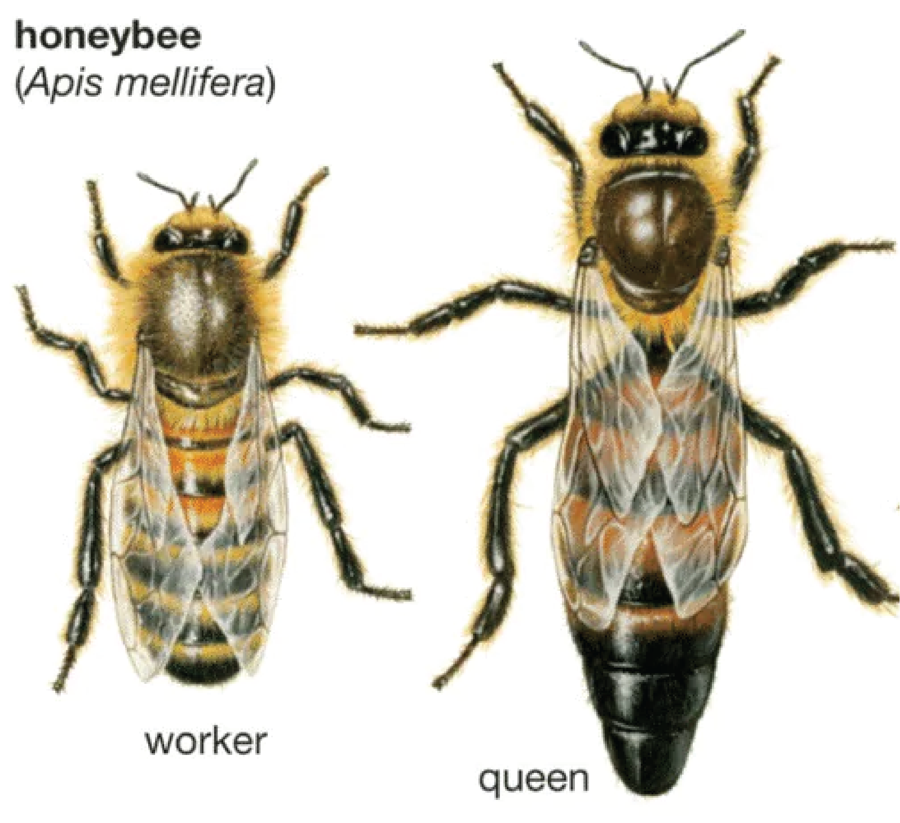

Development
Contents
Development¶
Why?
In the study of development we are interested not only in the final state to which the system arrives, but also in the course by which it gets there
—C.H. Waddington, 1957.
Given the evidence, familiar to everyone, that numerous environmental inputs are consistently supplied (essential) during normal development, the skepticism of biologists regarding the reliability of environmental factors relative to that of genes has to rank among the oddest blind spots of biological thought. Contrary to common belief, environmentally initiated novelties may have greater evolutionary potential than mutationally induced ones.
Animals don’t start their lives as tiny copies of adults; there are all sorts of changes that a creature goes through from fertilization to birth and from newborn to mature. This development is called ontogeny. In this session, we explore how ontogenetic change impacts animal behavior as they grow.
In some ways, developmental mechanisms are the alternate to genetic mechanisms. In other words, it is the consideration of what environmental factors influence phenotype expression. However, the influence of environmental factors depends on “genetically encoded” mechanisms to enable the environment to have an effect. etc…
Case Study: Polyphenism in Tiger Salamanders¶
- polymorphism¶
different phenotypes are enabled by different alleles of the same gene across individuals
- polyphenism¶
different phenotypes are enabled by mechanisms that control expression patterns among sets of genes within the same individual (ie. a single genotype)
Tiger salamanders exist in one of two phenotypes: normal and cannibal. These morphologically distinct phenotypes are associated with distinct behaviors. The most striking behavioral difference is in foraging. The normal phenotype feed on invertebrates (such as earthworms), while the cannibal phenotype feed on smaller conspecifics.
{kind=link}
Fig. 76 Tiger salamander morphs. Top: normal. Bottom: cannibal.¶
Cannibals are induced when crowded with conspecific larvae. To investigate the developmental mechanisms of this polyphenism, Hoffman and Pfennig1 used a jar to isolate the various sensory cues for conspecific density. Specifically, they therefore asked “what sensory cues trigger the expression of cannibals.”
{kind=link}
Fig. 77 In this experiment, phenotypically indistinct salamander larvae were housed together in various conditions (as shown). A jar was used to specifically manipulate the environment of a focal larva. The behavioral phenotype of the focal larva was asessed after larval development was completed. Each manipulation was repeated 16 times.¶
⏳ 10 min
Q1: How does this experiment provide evidence that the phenotypic variation in foraging behavior among salamanders is a polyphenism versus a polymorphism?
Q2: Which of the following statements would you agree with (select all that apply and write a brief statement of your reasoning for each statement that you agree with):
a. Mechanisms that alter gene expression are activated by neural sensory filters that are sensitive to the touch of conspecifics
b. The fitness of the cannibal phenotype is higher than the fitness of the normal phenotype
c. The fitness of the cannibal phenotype increases when a larger fraction of the population are normal phenotype
d. It would be more appropriate to model an evolutionary explanation of foraging behavior in salamanders using game theory than optimality theory.
⏸️ PAUSE here for class-wide discussion
If genes encode phenotypes, then how can the same genome produce different phenotypes?
Case Study: Queens versus Worker bees¶
DNMT3 is a protein that methylates cytosine nucleotides and controls the pattern of DNA methylation across the genome. We know that DNA methylation controls whether transriptional proteins can bind to the DNA upstream of their target genes. Additionally, to do its job, DNMT3, like any other protein, must be transcribed and translated (ie. expressed).
{kind=link}
Fig. 78 DNA methyltransferase (DNMT) methylates cytosine nucleotides.¶
Female bee larvae can develop into one of two castes (workers or queens), each with a unique behavioral repertoire.
{kind=link}
Fertilized eggs develop into female larvae over 3 days. All larvae are then fed royal jelly for 2-4 days. Then, most larvae are switched to a diet of pollen and nectar. However, some larvae remain on the royal jelly diet. Only the larvae with extended royal jelly diet become reproductively viable queens (hence the name: royal jelly).
Interestingly, experimental manipulation of Dnmt3 has been able to reproduce the effects of royal jelly on the development of queens (large) and worker (small) bees.2
⏳ 10 min
{kind=link}
Fig. 79 From left to right the experimental conditions are: royal jelly, no royal jelly, blocking Dnmt3 function, normal Dnmt3 function.¶
Refer to Figure 73 to answer the following questions.
Q3: Which experimental conditions resulted in larvae becoming adult workers?
Q4: Which experimental conditions resulted in larvae becoming adult queens?
Q5: In order to produce adult queens, royal jelly:
a. methylates cytosine nucleotides to control gene transcription and translation
b. mimics the effects of Dnmt3
c. blocks Dnmt3 from methylating cytosine nucleotides
⏸️ PAUSE here for class-wide discussion
In summary, the phenotype depends on which genes are expressed (actually transcribed and translated into proteins), not necessarily the genotye itself. THEREFORE, environmental factors that control which genes are expressed effectively control the phenotype.
EPIgenetics.¶
The accessibility of DNA to transription proteins is controlled by three main mechanisms:
DNA methylation
The addition of a methyl group to the 5-position of cytosine in the context of CpG dinucleotides.
histone modification
The fundamental repeating unit of chromatin is the nucleosome comprised of DNA wound around an octamer of core histone proteins. Posttranslational modifications of the amino-terminal tails of histone proteins (light and dark blue balls) and the density of these proteins per unit length of DNA, can importantly affect chromatin structure and constitute a putative “histone code.” Euchromatin and heterochromatin exist in different structural states (open and closed, respectively)
RNA
Impact the 3-D shape of chromatin and the accessability of DNA to transcription
{kind=link}
Case Study: Aggression¶
Variation in aggressiveness is linked in many species to variation in the serotonergic system and to variation in early exposure to androgens.
Think about what this implies about the role of hormones in epigenetics.
What kinds of neural changes might hormones cause that would result in a more aggressive individual? How could hormones cause neural changes via genetic mechanisms?
{kind=link}
Fig. 80 This graph shows the first evidence of hormone-mediated maternal effects in mammals (spotted hyenas). The results suggest an organizational mechanism for the development of aggressiveness in spotted hyaenas. A developmental perspective suggests that prenatal hormone exposure influences their baseline aggressiveness. This relationship between maternal faecal androgen concentration and cub aggression was not directly affected by maternal rank, maternal aggressiveness or any other variable explored.3¶
FAPs for aggression differ between males and females.
Think about what this implies about the genetic, neural, and development mechanisms of aggression in males versus females.
Do males and females have different alleles of the aggression genes (ie. are they sex-linked genes) or are there separate genes for male versus female aggression behaviors? Do males and females have similar or different neural circuits for aggression? Which parts of the circuit might be different and which parts might be similar? Could a male fly be induced to develop female aggressive behaviors?
{kind=link}
Fig. 81 Motor programs used in fruit fly aggression. A) The Venn diagram shows the different motor programs used in male and female aggression. Some of the motor programs are sexually dimorphic. The motor programs encircled in blue are specific for male aggression. The motor programs encircled in red are specific to female aggression. The intersection enlists the motor programs common to both male and female aggression. B) The most consistent motor program in male aggression is a lunge. In a lunge, a male fly stands on its hind legs and snaps down on its opponent. C) The most consistent motor program in female aggression is a head butt. In a head butt, the female fly extends her torso and strikes the opponent with her head.4¶
Neural plasticity (ie. learning)¶
- imprinting¶
Famously described by zoologist Konrad Lorenz in the 1930s, imprinting occurs when an animal forms an attachment to the first thing it sees upon hatching. Lorenz discovered that newly hatched goslings would follow the first moving object they saw — often Lorenz himself. Researchers continue to examine imprinting as an example of tightly constrained learning that involves genetic predispositions. The imprinting of a young animal on one object necessarily closes down the possibility of its imprinting on others. There is normally a relatively restricted period in the first few hours or days of life during which imprinting can occur.
- associative learning¶
involves a behavioral response to one stimulus being transferred to another stimulus through repeated temporal association. For example, salivating at the sound of a dinner bell after you have learned that a dinner bell is a signal that dinner is available.
- operant conditioning¶
involves the use of reward and punishment to modify behavioral responses to specific stimuli and requires personal experience to learn favorable stimulus-response relationships. For example, always wearing the same outfit on the day of a big presentation because the first time you wore it you gave the best presentation of your life. Or not challenging authority if you have been consistently been punished by challenging authority (ie. avoiding punishment).
- cultural transmission¶
is the process of passing along non-inherited behavioral scripts across generations. Culture represents a collection of behavioral scripts that are generally agreed upon by a group of individuals. These behavioral scripts can be adaptive (learned) or arbitrary.
Importantly, the ability to learn is genetically-encoded even though the learned material itself is not.